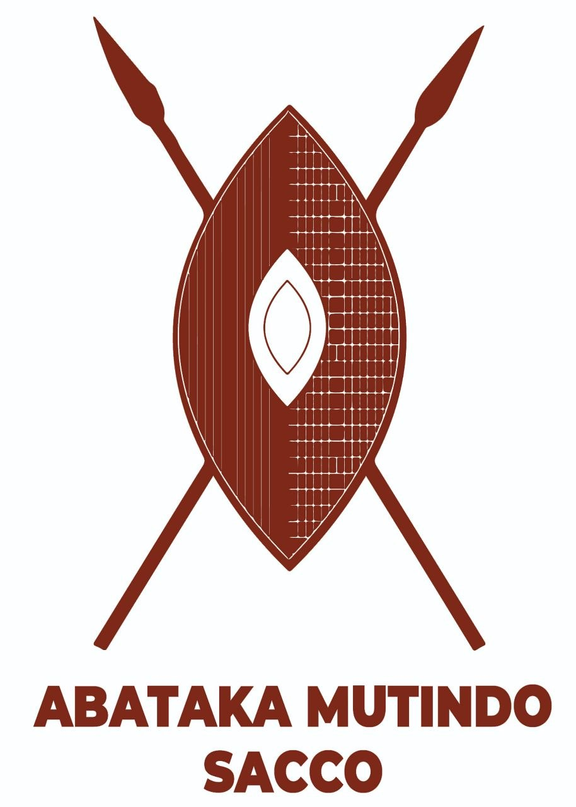
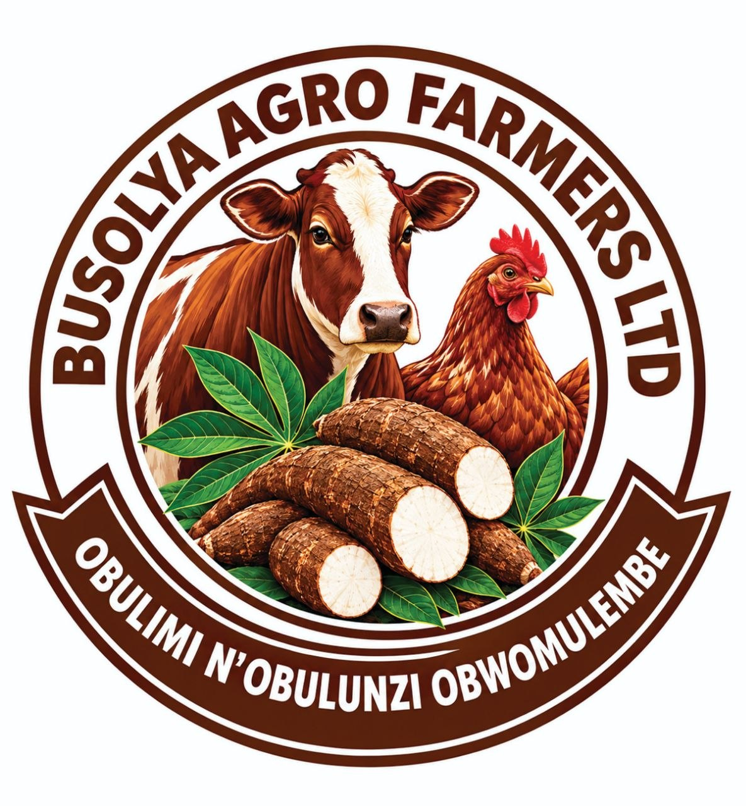

A platform of the Bataka network
The account behind the order.
A SACCO for the people the expo serves: savings that hold, shares that count, and credit that is priced against a member's record rather than a promise. It is also the hub that connects the network's sites.

The network
One front door, many platforms
Each site does one job and links to the others. This page is the exchange point: the SACCO sits between the farms that produce, the expo that trades, and the credit that makes both possible.

Live platform
Busolya Agro Farmers Ltd
Business facilitation, the print and online directory, the outreach programme and Farm Aid. The supply and visitor requests live here.
Open the Agro Farmers site ?
Live platform
Bataka Agro Expo
4–8 November, the annual fixture: exhibitors, nine teaching subjects, the QR and printed lead forms, and the credit desk where members are signed up.
Open the expo site ?
Coming next
Produce trading desk
Pooled volumes from Farm Aid farms, graded and sold against a contract. The trade side of the Bataka Trade Network.
Coming next
Land & layer register
Dormant land offered to Farm Aid, and the clan-layer records that make an introduction to the right council possible.
Coming next
Skilling institute
The nine expo subjects turned into a year-round short-course programme, with certificates for farm managers.
Coming next
Print shop & directory editions
The printed yellow pages, desk forms, QR cards and signage — produced for the network and for members.
Membership
What a member gets
- ✓Savings held in the member's name, with a passbook and a statement.
- ✓Shares that carry a vote at the general meeting, not just a dividend.
- ✓Credit assessed against a member record — including the visitor-requests and order history from the expo.
- ✓Guarantor cover that is written down: who signed, for what, and for how long.
- ✓Stand and input finance for exhibitors and Farm Aid managers, tied to a recorded plan.
Membership requirements, share value and interest rates are set by the SACCO and published here once confirmed. Nothing on this page is an offer of credit.
Join now
Quick membership registration
Fill in your details and we will create your member record. Your member number is issued immediately.
Already a member? Sign in
Why a hub
The network needs a place to change hands
Join the SACCO.
Savings that hold, shares that count, and credit priced against your record — not a promise. Sign up at the expo credit desk.